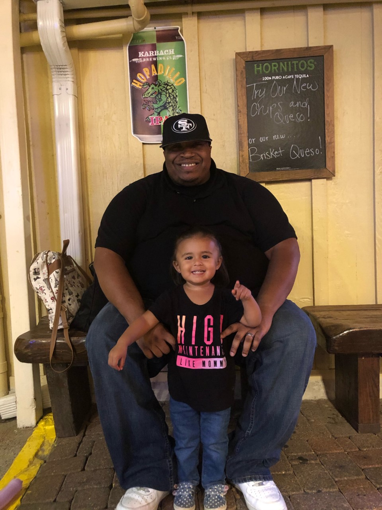

About Me
What's up! My name is Quintin Franklin and I am currently a coding student at UT-Austin Bootcamp. I was born on October 19, 1982 in a small town called Hitchcock, TX. I've been married for 6 years to Raquel and I have a 2 year old daughter named Zoe.
During my free time I like to hang out with my family and friends, playing video games, going to the movies, and watching sports. My goal is to learn all I can with coding to start a new career as a web developer.